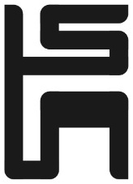

Make a board for every idea: a whole home, a kitchen, a corridor you love. Pin what you like. Tayo reads each board and finds real verified homes that feel like it.
Or pin from a little inspiration: